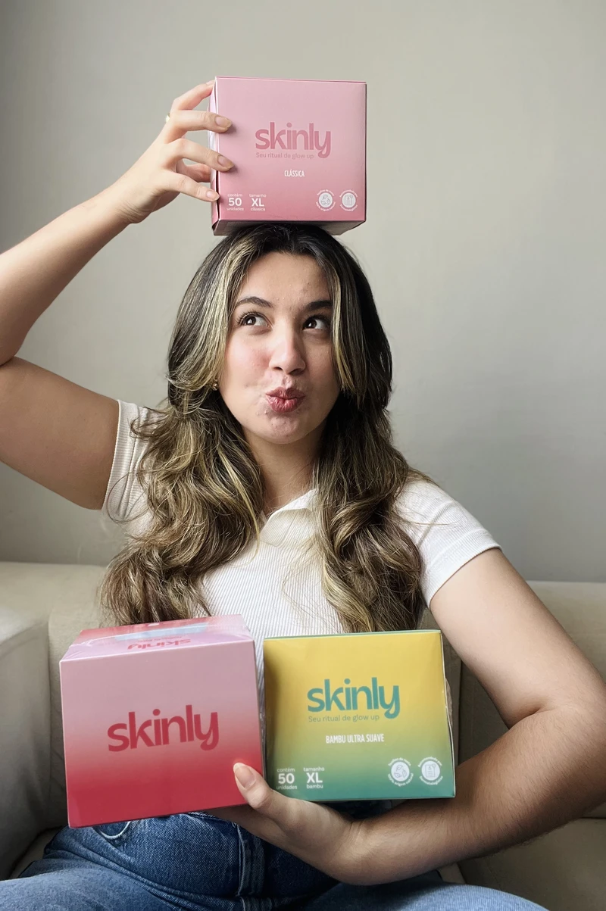
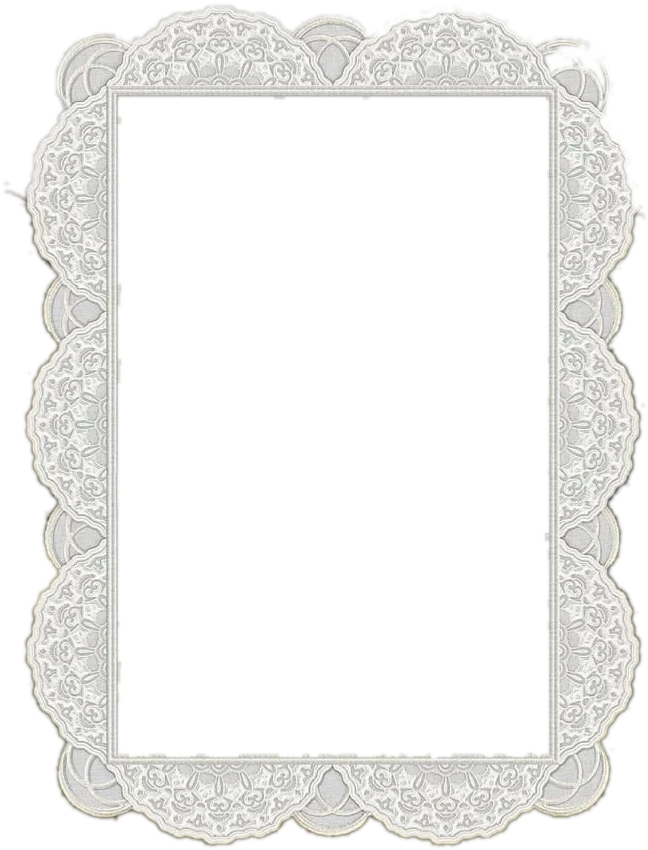
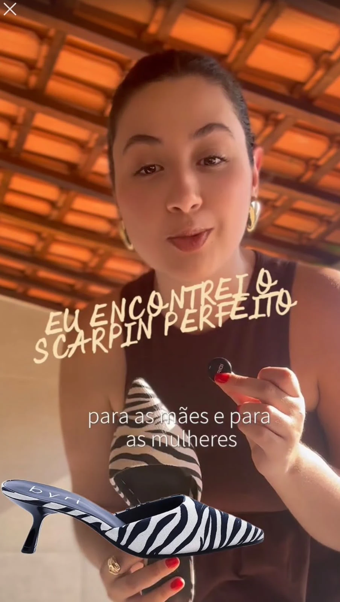
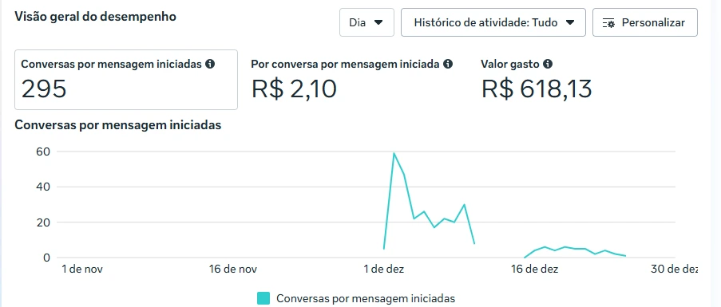
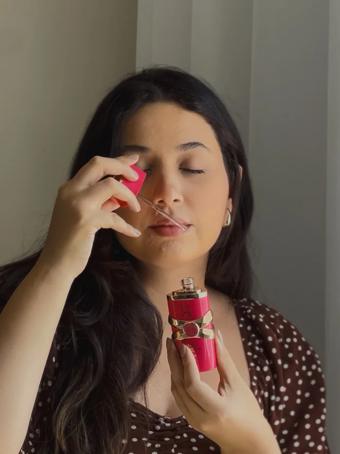
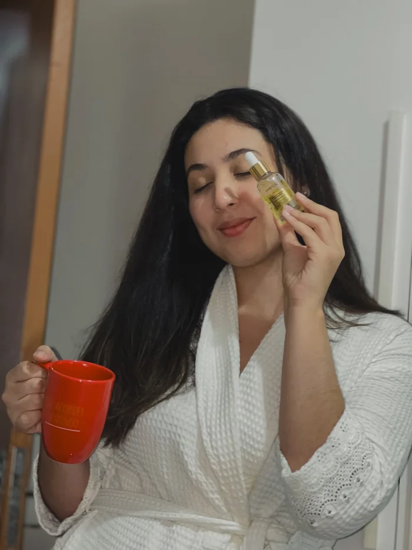
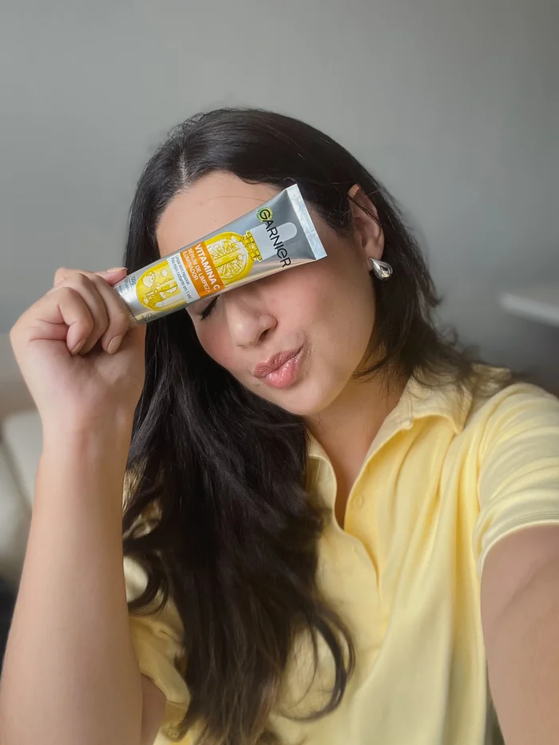
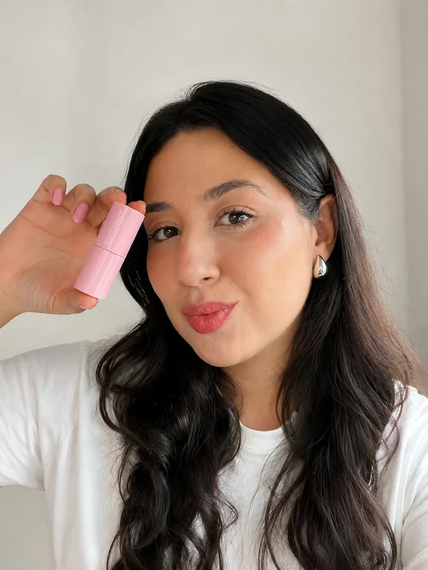

Conteúdo que parece espontâneo, pensado pra converter
Construído estrategicamente para gerar identificação e conversão.


Sobre mim
Oiiii, eu sou a Paloma
- Tenho 29 anos
- Criadora de conteúdo UGC.
- Localização
- Praia Grande • SP
- Mãe de dois meninos
- Especialista em conteúdo lifestyle.
- Especialidade
- Skincare, beleza, moda, tech e marketplace.
Com mais de 1 ano de experiência, já trabalhei com marcas nacionais e internacionais.
Cada produto é estudado de forma única e estratégica, e é desse estudo que nasce um roteiro bem elaborado: um roteiro que transforma o produto em história, conecta com o público e gera identificação e conversão.
Esses são só alguns dos nichos que já estão no meu portfólio, mas meu método se adapta a qualquer produto. O próximo nicho pode ser o seu.
- Marcas nacionais & internacionais
- + 12 parcerias recorrentes
- + de 1 ano criando UGC
Marcas que já criaram comigo
O que é UGC
O que o UGC faz pela sua marca?
UGC é a sigla pra conteúdo feito por quem usa o produto de verdade. Eu transformo minha experiência real em histórias criativas, que o público entende e confia, despertando o interesse em compra.

Um vídeo, 295 leads
Um criativo só, rodando como anúncio para a Byri, virou 295 conversas iniciadas a R$2,10 cada. Prova de que o conteúdo certo não só engaja, vende.

Algum deles já passou no seu feed?
Três produtos diferentes, três formatos diferentes, e os três funcionaram.
Eu leio o produto antes de gravar e escolho o formato que conecta ele com o público. Com o seu não é diferente: existe um formato certo para ele, e achar esse formato é o meu trabalho.
Passe o mouse ou deslize.
Trabalhos por nicho
Qual formato eu posso criar para a sua marca?
Os vídeos rodam aqui sem som. Clique em qualquer um para abrir com o áudio. Navegue por nicho e arraste para o lado para ver mais.
YouTube Ads
Mais visibilidade para a sua marca
Vídeos pensados estrategicamente para o formato do YouTube Ads, feitos para trazer mais visibilidade e mais alcance para a sua marca.
Feedback de quem já trabalhou comigo
O que as marcas dizem depois do vídeo pronto
Fotos
A próxima foto é do seu produto




Como eu te ajudo
Quatro formas de criarmos juntos
Bora criar juntos
Me conta da sua marca
CidadePraia Grande
WhatsApp(13) 99777-8507
E-mailpaalomazevedo@gmail.com
Instagram@paalomaribeiro
TikTok@paalomazevedo